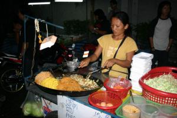
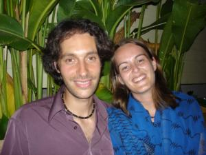
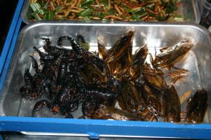

Le 24 décembre 2004,
Réveillée vers midi, je sors de la chambre et trouve un sac rempli de jus d’orange, brioches a la confiture et morceaux d’ananas pour mon petit-déjeuner. C’est Gaëlle qui nous a fait cette surprise ce matin ! Comme c’est adorable... Michael s’est levé avant moi et est parti se promener avec Gaëlle, je savoure mon festin en les attendant. Quel bonheur de trouver tout ça a mon réveil !
 Une des grandes différences de ce pays avec l’Inde, c’est qu’il est possible de manger dans la rue sans aucun soucis ! Pas de risque d’infection intestinale cette fois... Des stands de nourriture sont agglutinés sur les trottoirs et vendent de tout : de la viande au poisson, des nouilles de toute forme, des fruits, du jus d’orange avec des oranges pressées et même de l’alcool ! Les Thaïlandais eux-mêmes mangent de cette façon parce que c’est beaucoup plus rapide que de se faire soi-même à manger et ce serait plus économique pour eux !
En tous cas, nous nous régalons sur ces stands pour trois fois rien !
 Ce soir, c’est Noël, il faut se mettre sur son 31 ! Je décide donc, sous la demande express de Michael, de porter mon sari bleu ce soir. Michael porte une belle chemise et un élégant pantalon apportés de Paris pour l’occasion et Gaëlle est toute mignonne dans sa jolie jupe bleue et son débardeur acheté le matin même ! Nous rejoignons deux amies de Gaëlle qui font également un tour du monde et nous papotons autour d’un bon cocktail dans un agréable bar du coin. Quelques Mères-Noël super sexys nous rappellent que c’est Noël ce soir. Nous avons tendance à ne pas vraiment y croire sous cette chaleur et dans ce pays inconnu... Une petite pensée pour ma famille restée en France, même si je sais qu’elle ne fêtera Noël que demain midi. Ce soir, tradition familiale oblige, le repas de Noël se réduira à un plat de nouilles pour mes parents et ma soeur ! Chez nous, c’est sacré...
 Bref, Myriam et Patricia nous quittent et la foire aux cadeaux arrive... Le Père-Noël a réussi à se frayer un chemin jusqu’ici... Chouette ! J’ai reçu un très beau bracelet de la part de Gaëlle accompagné d’une petite salamandre en peluche et un autre bracelet en argent, mais pour mettre a la cheville cette fois de la part de mon chéri ! J’avoue avoir été bien gâtée... Nous entamons ensuite notre recherche d’un bon restaurant pour dîner. Malheureusement, beaucoup sont des pièges à touristes et nous ne trouvons pas vraiment notre bonheur dans ce que nous voyons. Peu importe, nous décidons de fêter Noël à la thaïlandaise et mangeons a un stand de pâtes, debout, dans la rue. En passant devant un stand d’insectes grillés, Michael et Gaëlle complètent leur repas avec des vers, limaces et sauterelles grillées !! Beurk... Rien que de les regarder manger, ça me coupe net l’appétit ! Enfin, ils reconnaissent que ce n’est pas terrible... Histoire de ne pas mourir idiote, je goûte quand même un petit ver et franchement il n’y a pas de quoi se relever la nuit !
Michael, affamé, se commande en plus en beau poisson tout frais et rose à manger et en attendant que ce pauvre poisson ne cuise, nous avons le droit à un choeur de jeunes chanteurs thaïlandais qui s’égosillent rien que pour nous ! Même s’ils chantent faux, ils sont charmants... Il n’est pas très tard, mais nous sentons déjà la fatigue qui commence à nous étreindre. Nous ne tarderons pas à aller nous coucher en laissant Gaëlle sur Internet souhaiter un Joyeux Noël à son chéri ! Sur le chemin du retour, nous nous apercevons que Noël a été fêté par un grand nombre de personnes ici et qu’il n’y en a pas beaucoup qui réussissent à marcher droit ! Nous avons été sages à côté d’eux...
Eve-Laure
Jumbo !
Cela signifie "bonjour" au kenya. Je m’inquiétais pour vous (le séisme). Je suis rassurée de savoir que vous n’avez rien tous les 4. Et oui, je suis votre aventure depuis environ 3 semaines. Je m’appelle Béatrice et je suis passionnée par ... comment dire. La découverte d’autres pays, surtout l’Afrique. Je suis partie 3 fois au Kenya (2x 5 semaines et la dernière fois 9 s), sénégal, côte d’ivoire, mada, et d’autres pays comme bali, Tahiti, ... Je reste toujours plus de 2 à 3 semaines minimum. Et depuis un an, je me dis pourquoi pas un "tour du monde". Je lis beaucoup de récis/essais sur des personnes qui ont fait cette expérience. Et je vis votre aventure en live. Bon courage ! Béa
{kind=link}
{kind=link}
{kind=link}
{kind=link}